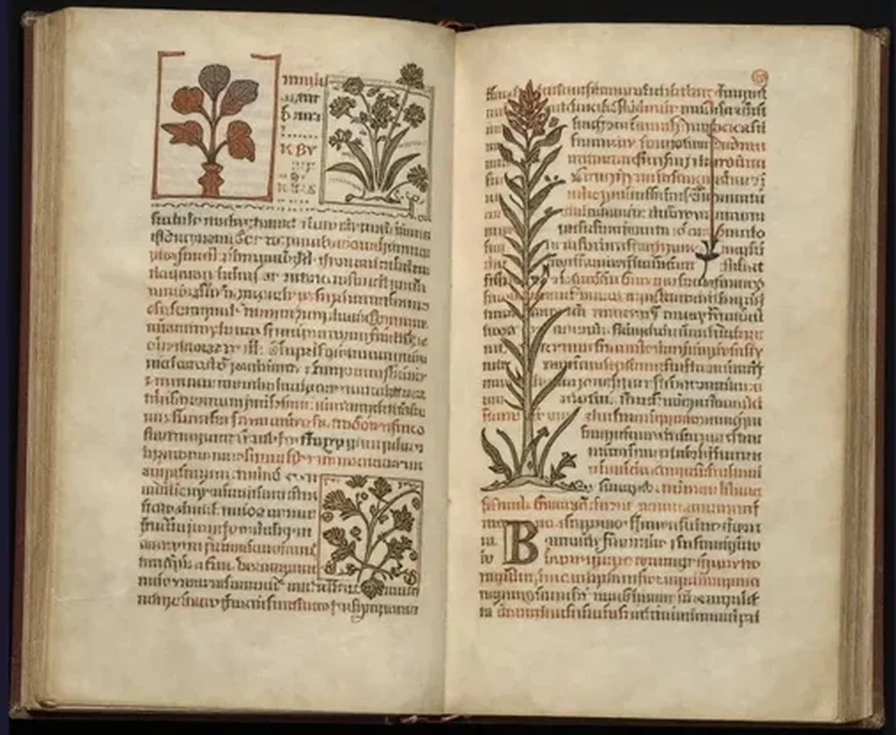

The Voynich Manuscript: The Most Mysterious Book in the World

In 1912, a book dealer named Wilfrid Voynich was searching through an old chest of manuscripts. He was a Polish-American who traded in rare old books. The chest sat in the library of the Villa Mondragone, a Jesuit college near Rome. Inside it he found something that would puzzle scholars, codebreakers, and dreamers for more than a century.
It was a book of about 240 pages, roughly the size of a modern paperback. The pages were made of vellum, a fine material made from animal skin. They were filled with small, neat writing in an alphabet that nobody on Earth could read.
The pictures were even stranger than the writing. There were drawings of plants that match no known species. There were star diagrams showing impossible star systems. And there were dozens of tiny women bathing in pools of green liquid, joined by a web of tubes and pipes. It looks like a medieval idea of plumbing for the human body.
The book was clearly old, carefully made, and impossible to understand. Voynich bought it from the Jesuits and brought it to America. There it caught the eye of the greatest codebreakers of the twentieth century. They included people who had cracked the Enigma code in World War II. None of them could read a single word.
Over the years, the book has been tested in every known way. Experts have used statistics, computers, language study, chemistry, and X-rays. Radiocarbon dating is a method that measures old carbon in a material to tell its age. It showed that the vellum dates to between 1404 and 1438. So the book is a real medieval object, not a modern fake. The ink and paint fit the same period.
Yet the text is still unread. It uses an unknown alphabet of about 20 to 25 characters. The writing flows with the ease of a real language. The Voynich Manuscript is often called the most mysterious book in the world.
What makes it so maddening is that it looks readable. The text is not random. Statistics show it follows patterns of natural language. Some characters appear more often than others. Words have regular lengths. There are repeats and structures that suggest grammar and meaning.
The pictures are odd, but they fall into clear sections. That suggests the book had a practical purpose, perhaps as a book of medicine or alchemy. Alchemy was an old art that tried to turn metals into gold and find magic cures.
Yet every try to match the text to a known language has failed. So has every try to find a secret code in it. Today the book sits in a climate-controlled vault at Yale University’s Beinecke Rare Book and Manuscript Library. Its number there is MS 408. It still beats the best minds in the world.
The book has five sections, and each has its own kind of picture. The herbal section is the biggest. It fills about half the book. Each page shows one or two plants with some text. The drawings are skilled and detailed. But most of the plants match no known species. Some look like mixes of leaves, flowers, and roots from different real plants.
The astronomical section shows stars, suns, moons, and zodiac signs. Some circles with spokes look like medieval star tables. The biological section is the strangest and best known. It shows dozens of small female figures in pools or tubs of green liquid, joined by pipes and channels.
People have read these pictures in many ways. Some say they show a medieval book about women’s health. Others see an alchemy diagram. Others think they show the human blood system.
The cosmological section has complex circles and foldout pages with flower-like shapes. They may show a medieval model of the universe. The pharmaceutical section shows roots, herbs, and medicines, with jars like those in old pharmacies. It looks most like known medieval books on herbs and medicines.
The book’s history reads like a thriller. A letter was found tucked inside it. Using that letter and later research, scholars have traced its owners back to the early 1600s. The letter was written in 1666. It says that Emperor Rudolf II of Bohemia once owned the book. He lived from 1552 to 1612. He was a shy ruler of the Habsburg family who loved alchemy, astrology, and the occult.
Rudolf is said to have paid the equivalent of 600 gold ducats for the book. That was a huge sum. He believed it was the work of Roger Bacon, an English thinker of the Middle Ages. After Rudolf died, the book passed to his doctor, Jacobus Sinapius.
Later it reached the Jesuit scholar Athanasius Kircher in Rome. He was one of the most learned men of the 1600s. He published some of the zodiac pictures but could not read the text. After that, the trail goes cold for more than two centuries. Then Voynich found it in the Jesuit library in 1912. A dealer named Hans Kraus bought it in 1961. He gave it to Yale University in 1969.
The story of the attempts to crack the book is one of brilliant, stubborn, and sometimes desperate failure. The first serious modern study came in the 1920s. William Romaine Newbold, a philosophy professor at the University of Pennsylvania, claimed to have solved it. He said the text was a tiny hidden cipher. It showed, he said, that Roger Bacon had owned a telescope and knew of the Andromeda galaxy.
Later scholars tore his claims apart. They showed his method was nearly random. He was reading meaning into odd marks in the letters.
In the 1940s and 1950s, professional codebreakers took an interest. One was William Friedman. He was chief cryptologist of the US National Security Agency. He also broke the Japanese PURPLE code in World War II. Friedman gathered a team, including some who had worked on Enigma. They studied the book for years.
Their conclusion came with clear frustration. The text was not any known cipher. Standard code-breaking methods could not crack it. Friedman himself guessed that the text might be a made-up language. That guess is still one of the most likely ideas.
Computers arrived in the late twentieth century. They brought new tools but no breakthrough. Studies confirmed that the text shows traits of natural language. One is Zipf’s Law, a pattern of word use found in all natural languages. Others are how often each character appears and how long the words are. Still, the text matched no known language.
In 2014, researchers at the University of Bedfordshire published a study. They said the text fits a made-up language. The author would have built it with its own inner rules. It would not match any real tongue.
In 2019, a team led by computer scientist Greg Kondrak at the University of Alberta used artificial intelligence on the text. They found that its statistical patterns look most like Hebrew. That hinted at a coded Hebrew text. But most scholars did not find their sample translations convincing.
Also in 2019, a Turkish researcher named Ahmet Ardıç made another claim. He said the book was written in a lost Turkic language, using a cipher based on sounds. Nobody else has checked this claim.
Some people think the book may be an elaborate medieval fake. People have argued about this since Voynich first showed it. The radiocarbon dates of 1404 to 1438 rule out a modern forgery by Voynich himself. But a medieval vellum does not prove the text has meaning.
In 2003, computer scientist Gordon Rugg published a bold paper. He showed that a simple grid system could make text with the same statistics. It was called a cardan grille, a sixteenth-century tool for making meaningless text that looks like language. Rugg said a medieval faker could have used it to make a convincing book of nonsense. He might have sold it to a rich buyer like Emperor Rudolf II.
But later studies found something else. The text has deeper patterns, beyond simple character counts. Rugg’s method does not easily copy them. So the text seems more complex than a simple hoax would give.
The writing in the book is unique in the history of writing. It uses about 20 to 25 different characters. They run from left to right in a smooth, confident hand. The letters are elegant and very even from start to end. That suggests one writer, or a small group of trained writers.
There are no crossed-out words and no corrections. There are no signs of doubt. The writer seems to be using a script they knew well. The alphabet matches no known writing system. It is not Latin, Greek, Hebrew, Arabic, or Cyrillic. It matches none of the hundreds of scripts known from the Middle Ages.
The text has many “weird words.” These are very rare words that appear only once in the whole book. It also has repeated phrases and formulas, which hint at some structure. The word entropy is lower than in most natural languages. Entropy here means how unpredictable the words are. This has led some researchers to think the text may be a simpler form of a natural language, not a full language itself.
The Voynich Manuscript is more than a puzzle. It is a challenge to how we see the medieval world. If someone reads it, it could reveal lost knowledge about medicine, plants, or the stars. The herbal section may describe real plants and their uses. That could be a tradition of medicine that Europe never took up.
The bathing figures might shed light on medieval alchemy, medicine, or ideas about nature. They have left no other trace in history. Or the book could be a medieval fantasy. It might be an alchemist’s dream diary, a story in a private language, or a trick played on a trusting emperor.
Either answer would be amazing. If it is real, it is a lost encyclopedia of medieval knowledge. If it is a hoax, it is the best and longest-lasting literary fraud in history. It would have fooled the world’s greatest minds for more than a century.
New researchers keep coming, with ever stronger tools. In 2014, the Beinecke Library scanned the whole book. It put the pictures online for free, so anyone can study every page in high detail. Machine learning programs have been trained on the text. They search for patterns that people cannot see. None of this has produced a reading that most scholars accept.
The book is what it has been since 1912. It is a locked room with no door. It is a message from the medieval world that we can see but cannot hear. It is truly old and was written in an unknown script. Its pictures defy explanation. It has beaten every method of decoding invented in the past hundred years.
The best codebreakers of the twentieth century failed to read it. The most powerful computers of the twenty-first century have failed too. It sits in a vault at Yale, on 240 pages of vellum. It is as puzzling today as when Wilfrid Voynich pulled it from a chest in a Roman villa.
The book does not care whether we understand it. It has waited six hundred years. It can wait six hundred more. So what does it say, if it says anything at all? Nobody knows.
References & Further Reading
Wikipedia: Wilfrid Voynich — The book dealer who discovered the manuscript in 1912
Wikipedia: Cryptanalysis — The science of codebreaking and its application to the Voynich Manuscript
📚 Recommended Reading: The Voynich Manuscript by Raymond Clemens (on Amazon) — As an Amazon Associate, we earn from qualifying purchases.
Editorial note: decipherment claims are continuously evaluated by the scholarly community as new analytical methods emerge. See our Editorial Policy.